A production-grade traffic & vehicle detection service — from a containerized REST API to fine-tuned YOLOv8 models, automated CI/CD, and AWS cloud deployment.
AutoVision API is a traffic and vehicle detection service powered by YOLOv8 and exposed via a FastAPI REST interface. It accepts images, video files, and live webcam streams, returning annotated output with bounding boxes around detected vehicles, traffic lights, and pedestrians.
The project was built in four progressive MLOps phases, each layer adding production practices on top of the previous: raw model serving → experiment tracking → automated quality gates → cloud deployment.
Phase 1 delivers the complete detection service: a FastAPI application wrapping YOLOv8, containerized with a production-grade multi-stage Dockerfile, and orchestrated alongside an MLflow container via docker-compose.
| Method | Path | Description | Response |
|---|---|---|---|
| GET | /health | Liveness check — confirms model is loaded | JSON: status, model_loaded, model_name |
| POST | /predict | Upload JPEG/PNG/WebP (≤ 10 MB), get annotated image back | Annotated JPEG + X-Detections header |
| POST | /predict/video | Upload MP4/AVI/WebM/MOV (≤ 100 MB). Configurable sample_fps (1–30). |
Annotated MP4 + X-Summary header |
| GET | /stream | Webcam live detection page served in browser | HTML page |
| WS | /ws/detect | Real-time detection. Client sends base64 JPEG, receives annotated frame + JSON | JSON: annotated frame + inference_ms |
8 vehicle-relevant classes filtered from COCO's 80: car, truck, bus, motorcycle, bicycle, person, traffic light, stop sign.
3-class head (car · truck · bus) trained on 1,830 Roboflow images. Switches in automatically when MODEL_SOURCE=mlflow.
Configurable sample_fps. Each sampled frame runs YOLO; annotations carry forward to non-sampled frames for smooth output.
getUserMedia → base64 JPEG over WS → annotated frame + detection JSON. Client controls framerate — no queue buildup.
# Stage 1: builder — has compilers, installs all deps FROM python:3.11-slim AS builder RUN apt-get install -y gcc libglib2.0-0 libgl1 RUN pip install --prefix=/install -r requirements.txt # Stage 2: runtime — lean image, no compilers FROM python:3.11-slim COPY --from=builder /install /usr/local # only installed packages COPY app/ app/ USER appuser # non-root security HEALTHCHECK --interval=30s --retries=3 \ CMD python -c "urllib.request.urlopen('http://localhost:8000/health')" CMD ["uvicorn", "app.main:app", "--host", "0.0.0.0", "--port", "8000"]
FastAPI app. MODEL_SOURCE=local uses yolov8n.pt; MODEL_SOURCE=mlflow loads the Production-staged fine-tuned model.
MLflow tracking server. SQLite metadata backend. Artifacts on a shared Docker volume accessible by both containers.
Named Docker volume shared between api and mlflow. Holds both mlflow.db and all training artifacts (weights, plots).
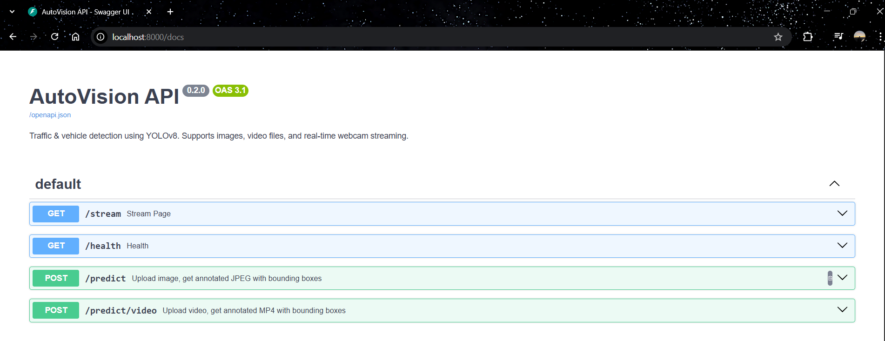
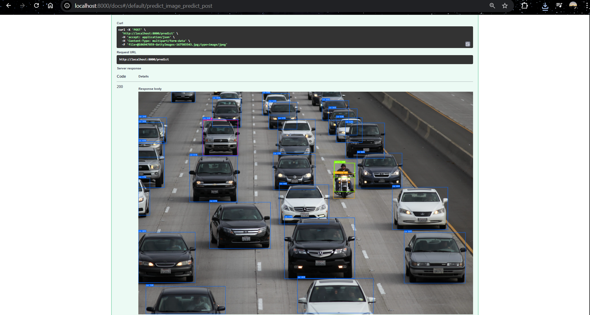
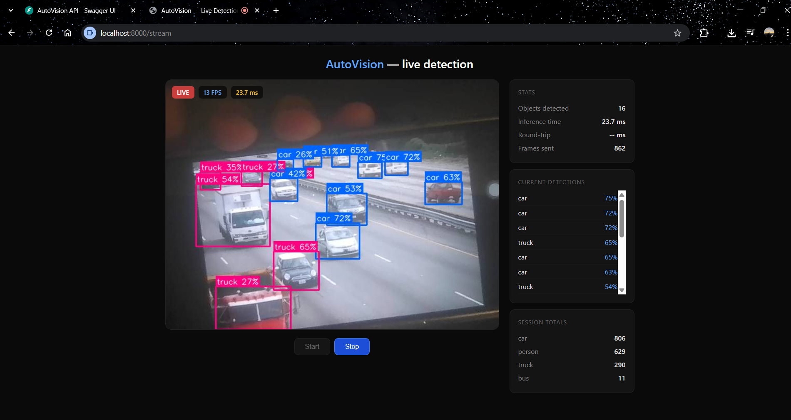
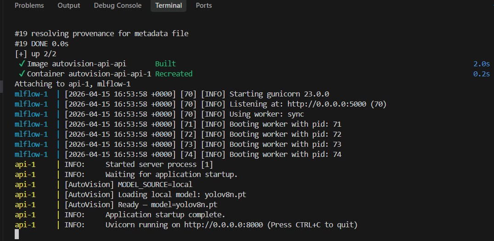
training/download_dataset.py.
| Experiment | Key Change | Epochs | imgsz | lr0 | Hypothesis |
|---|---|---|---|---|---|
| exp1-baseline | Control — defaults | 20 | 416 | 0.010 | Reference run for comparison |
| exp2-high-res | Resolution ↑ 416→640 | 20 | 640 | 0.010 | Bigger images improve small/distant vehicle detection |
| exp3-heavy-aug | Aug ↑ + LR ↓ + mixup | 30 | 416 | 0.005 | Heavy aug generalizes better; lower LR needed to converge under noise |
base_model, epochs, imgsz, batch, lr0, lrf, mosaic, mixup — full config for every run.
mAP50 · mAP50-95 · Precision · Recall — extracted from YOLO's results.csv.
Best weights (best.pt) + all training plots (F1 curve, PR curve, confusion matrix).
register_best.py picks the highest mAP50 run → registers as autovision-traffic → Production.
# Local mode (default) — pretrained yolov8n, 8 COCO classes MODEL_SOURCE=local # MLflow mode — fine-tuned best.pt from Production registry, 3 classes MODEL_SOURCE=mlflow
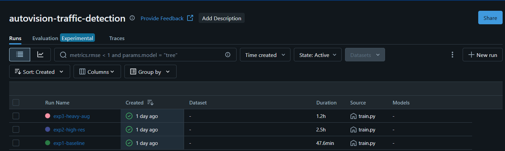
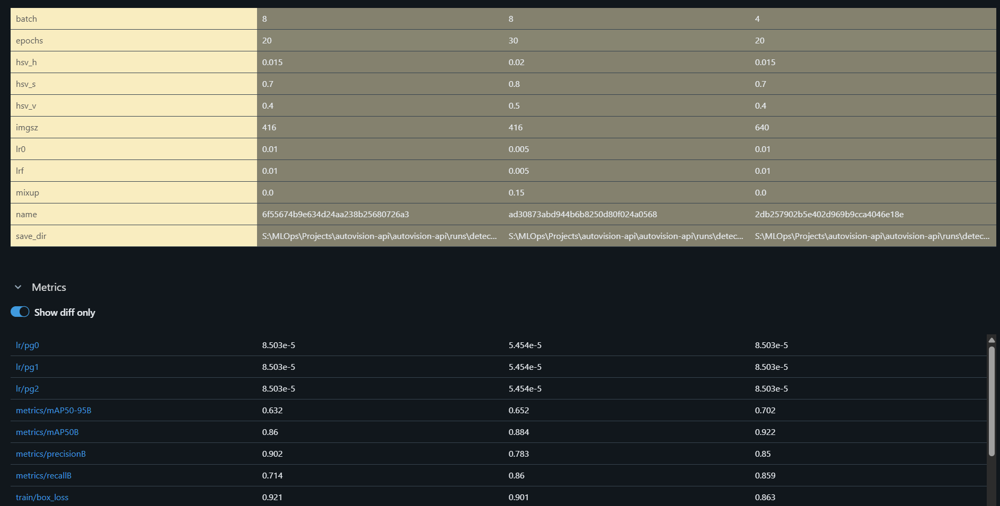
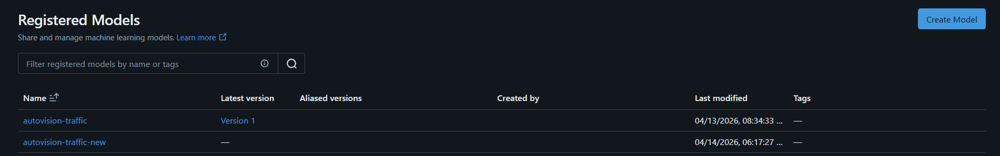
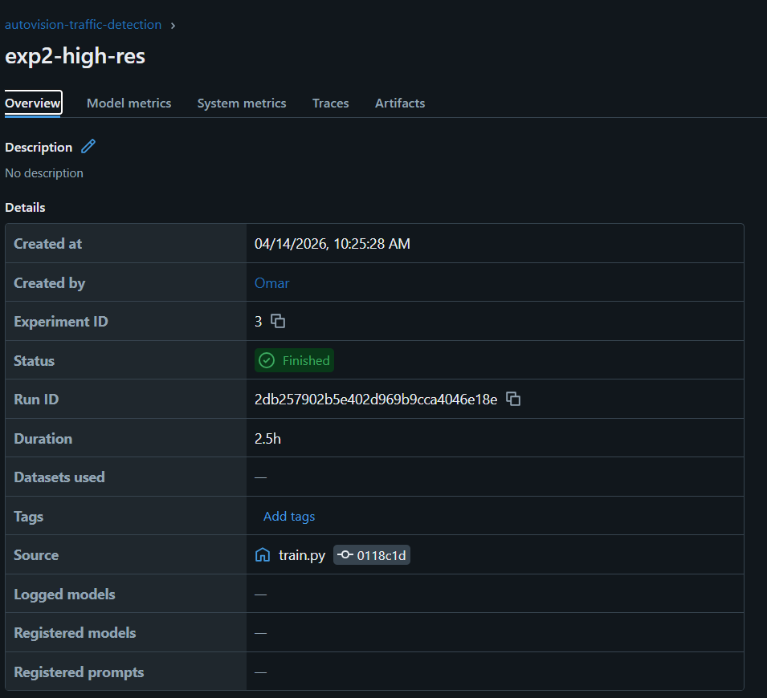
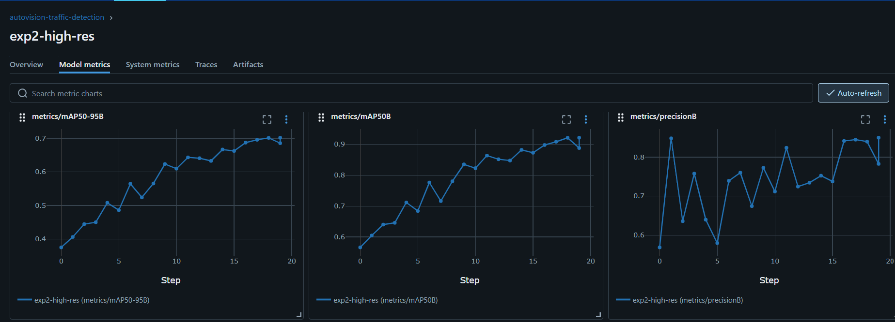
ultralytics + PyTorch fills it. The pipeline removes pre-installed dotnet, Android SDK, GHC, and CodeQL before Docker builds — freeing ~10GB.
| Class | Count | Coverage |
|---|---|---|
| TestHealth | 5 | Status 200, healthy status, model_loaded, model_name present, JSON content-type |
| TestPredictImage | 11 | JPEG/PNG accepted, valid JPEG response, X-Detections JSON, wrong type/empty/no file → 422, small + large images |
| TestPredictVideo | 9 | MP4 accepted, video/mp4 response, X-Summary structure, wrong type/empty/no file → 422, sample_fps, out-of-range → 422 |
| TestApiStructure | 7 | OpenAPI schema available, /docs available, unknown route → 404, all 4 endpoints in schema |
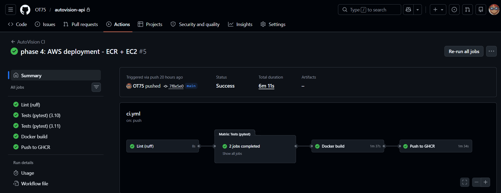
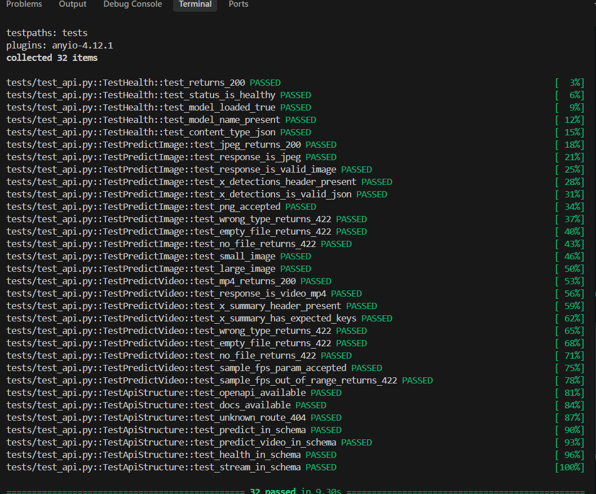
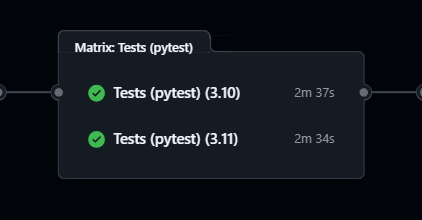
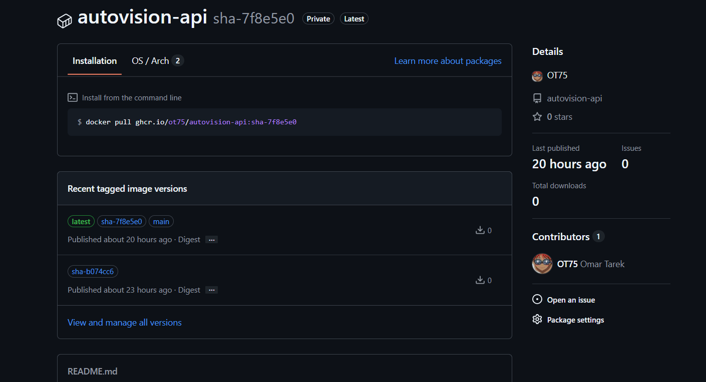
Private container registry in eu-central-1 (Frankfurt). Image tagged and pushed via scripts/deploy.sh.
Virtual machine running Docker. Container binds to port 8000 — same API, same endpoints, on cloud infrastructure.
ECR login uses aws ecr get-login-password — temporary token, no static credentials stored in the image.
# Requires: AWS_ACCOUNT_ID env var + AWS CLI configured AWS_ACCOUNT_ID="${AWS_ACCOUNT_ID:?Set AWS_ACCOUNT_ID env var}" ECR_REGISTRY="${AWS_ACCOUNT_ID}.dkr.ecr.eu-central-1.amazonaws.com" # 1. Login — temporary token, no static keys aws ecr get-login-password --region eu-central-1 | \ docker login --username AWS --password-stdin $ECR_REGISTRY # 2. Build → tag → push docker build -t autovision-api . docker tag autovision-api:latest $ECR_REGISTRY/autovision-api:latest docker push $ECR_REGISTRY/autovision-api:latest
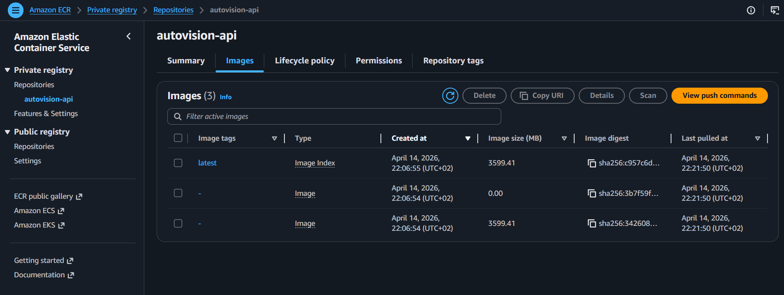
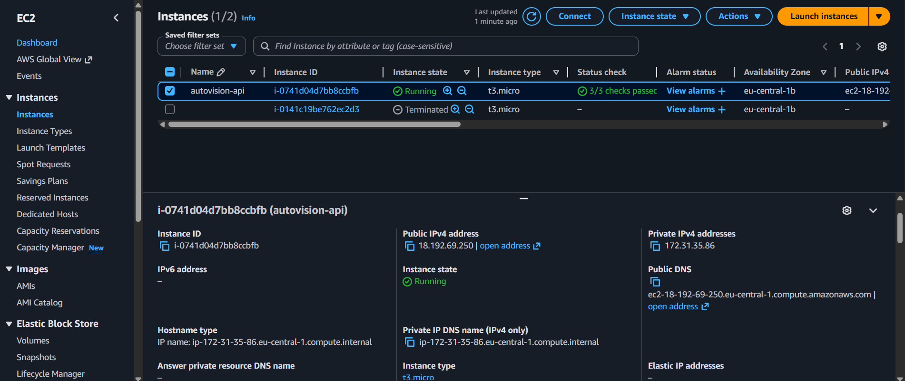
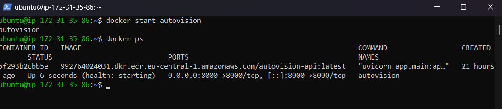
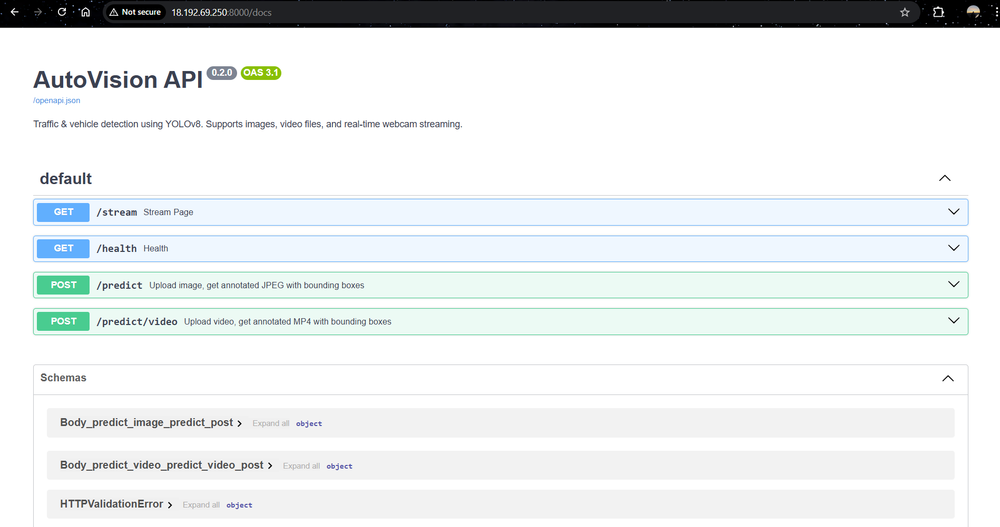
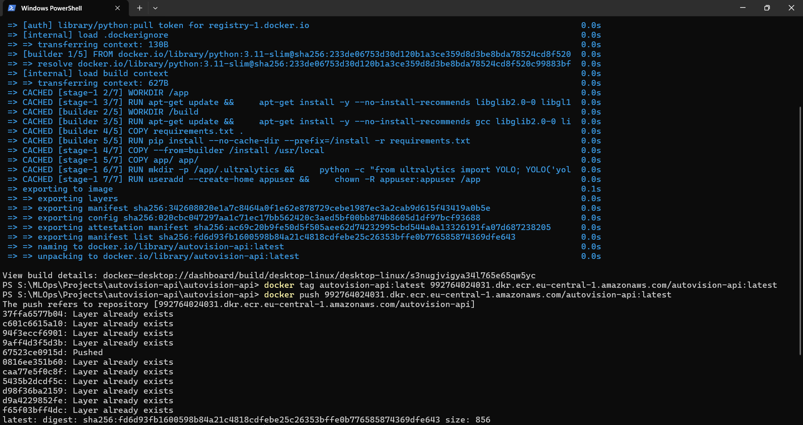